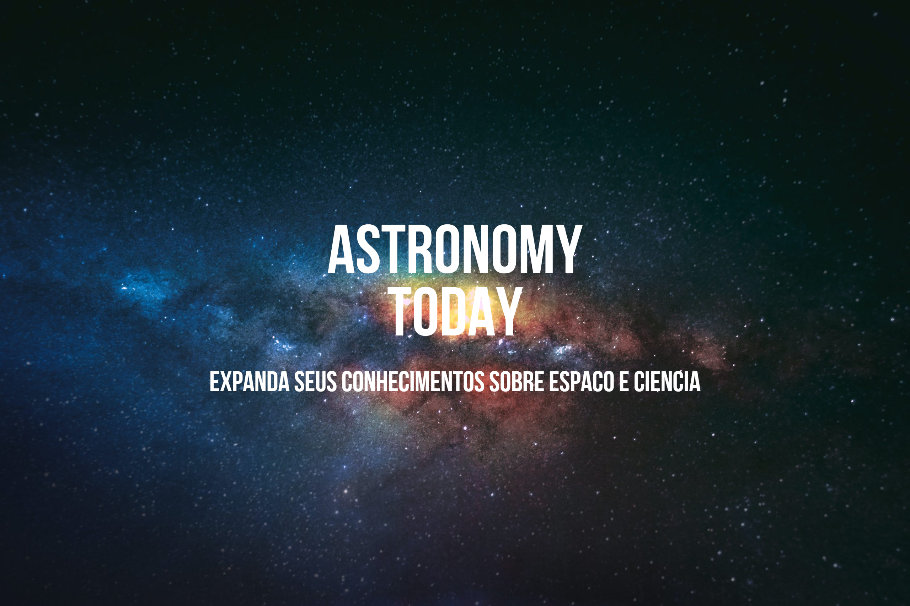

Possível vida em marte
NASA revela que encontra possíveis evidências de, em algum período de tempo, vida em marte: Jim Green, pesquisador, cientista e astrofísico da NASA, revela que água (H2O) foi encontrada nos polos do nosso vizinho, o planeta vermelho, marte. Segundo ele, tudo indica que o planeta já pode ter tido grandes concentrações de água no passado. O que sugere, segundo a nossa própria vida terrestre, que em algum momento, organismos vivos podem ter habitado no pequeno planeta rochoso.

Forte erupção solar atinge a Terra: que impacto isso pode causar?
Alguma coisa está acontecendo com o nosso Sol. No último dia 11 de julho, uma das regiões da atmosfera solar que exibe manchas despertou a atenção dos observatórios devido a um repentino aumento de seu brilho ultravioleta e raios X.Uma erupção solar havia acabado de ocorrer. Ou seja, uma emissão repentina de radiação eletromagnética e partículas de energia localizadas em uma pequena região da atmosfera solar. Porém, felizmente, nada disso nos afeta, graças ao grande campo eletromagnético da terre e nossa atmosfera, que nos protege de quase todo tipo de ameaça espacial.

Cientistas conseguem cultivar plantas em solo lunar pela 1ª vez
Cientistas cultivaram plantas em solo lunar pela primeira vez, um passo importante para tornar possíveis estadias de longo prazo na Lua. Os pesquisadores usaram pequenas amostras de terra coletadas durante as missões Apollo entre 1969 e 1972 para cultivar um tipo de agrião. "Não posso dizer o quanto ficamos surpresos", afirmou Anna-Lisa Paul, professora da Universidade da Flórida, nos Estados Unidos, que é coautora de um artigo sobre as descobertas recentes.

A impressionante foto de Júpiter que quase passou despercebida
Junto com as primeiras fotos tiradas pelo telescópio espacial James Webb, imagens de Júpiter quase passaram despercebidas pela mídia, mal se vê nas imagens, uma pequena linha em volta do planeta, nessa imagem, se pode ver um cinturão do planeta Júpiter, parecido com o grande de Saturno, mas bem menor.

Como telescópio pode ajudar na busca por vida no espaço.
Somos dois cientistas que estudam exoplanetas e astrobiologia. Graças, em grande parte, aos telescópios de nova geração, como o James Webb, pesquisadores como nós logo serão capazes de medir a composição química da atmosfera de planetas que orbitam outras estrelas. Dizem os cientistas Chris Impey e Daniel Apai, astrofísicos.

Em busca de Bioassinaturas
Para detectar vida em um planeta distante, os astrobiólogos estudarão a luz estelar que interagiu com a superfície ou a atmosfera de um planeta. Se a atmosfera ou a superfície houver sido transformada pela vida, a luz pode carregar uma indicação, conhecida como "bioassinatura". Mais do que nunca, com o novo James Webb, podemos procurá-las com muito mais facilidade.

Fases do lançamento de Webb
Como na imagem, primeiro se foi a sua construção e logo, lançamento na terra, seguido por a sua espera para despressurização e resfriamento dos componentes, então, acontece a maior separação da história dos foguetes e satélites, a separação do outro foguete e a sua liberação e mais espera para resfriamento no espaço.

Webb pode ter encontrado galáxia mais antiga já observada
Trata-se da GLASS-z13, que possui cerca de 13,5 bilhões de anos, remetendo aos primórdios do Universo. Segundo os cientistas, a mancha vermelha (confira a seguir) capturada pelo observatório é um grupo giratório de estrelas, gás e poeira, unidos pela gravidade, que se formou "apenas" 300 milhões de anos após o Big Bang.

Telescopio James Webb é danificado por meteoroide
Dano relativamente grave, porém, segundo o pesquisador Jhon Mackfew, tal dano já tinha sido sofrido em outro satélite, como aconteceu no Hubble, em 1993, onde, segundo ele, algo terrível havia acontecido, mas era algo isolado Segundo a agência espacial dos EUA, o dano provocado pelo micrometeoroide foi relativamente grave e irreparável, causando "uma mudança significativa e incorrigível no valor geral desse segmento".
Conheça a AstronomyToday
Somos um blog científico hospedado na internet, com o objetivo de espalhar conteúdos científicos, com foco na astronomia, como se diz o nome, para o maior número possível de pessoas.
Nossa equipe é formada por estudantes e já profissionais científicos, com diversos cientistas nacionais e até pesquisadores de fora.
Contato
Rua Guilherme Lahm, 1778 - Jardim do Prado
Instituição educacional
Bloco C – 1o. andar
Cimol
Taquara, Rio Grande do Sul/RS
CEP 95600-000
Telefone: (51) 8531-0392
Site: www.astronomytoday.com.br
e-mail: astronomytoday@cimol.g12.com